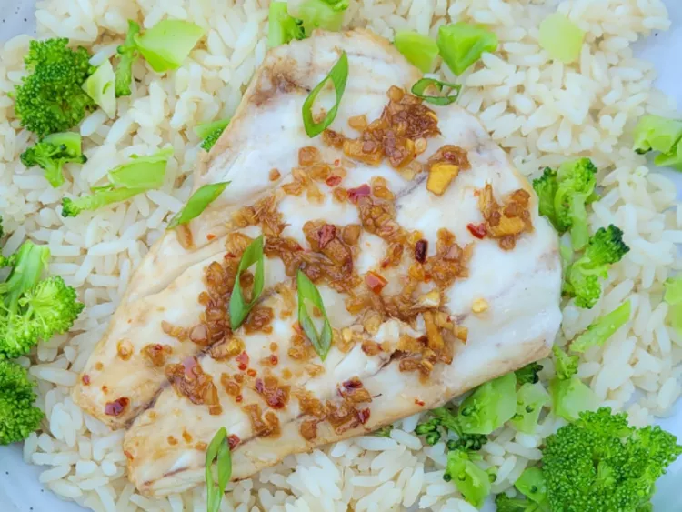

Description
In this baked rockfish recipe, a light Asian-inspired sauce is poured over the filets, complimenting the delicate flavor of the rockfish. Serve over rice and vegetables with some of the cooked sauce for a nice easy meal.
Ingredients
- 4 (6 ounce) rockfish filetsl
- 1 tablespoon sesame oil
- 2 cloves garlic, minced
- 1 teaspoon salt
- 1 tablespoon finely minced fresh ginger
- 1 tablespoon honey
- 1 tablespoon soy sauce
- 1 tablespoon lime juice
- 1/4 cup diagonally thinly sliced scallions
Directions
- Preheat the oven to 400 degrees F (200 degrees C). Line a shallow baking pan with aluminum foil, and spray with cooking spray. Place filets onto the prepared baking pan.
- Whisk oil, lemon juice, garlic, salt, smoked paprika, brown sugar, chili powder, and black pepper together in a bowl; set aside.
- Bake in the preheated oven until fish flakes easily with a fork, 10 to 15 minutes. Sprinkle filets with scallions before serving.
- Brush one side of each steak with some of the oil mixture. Place steaks on the preheated grill, oiled-side down; grill for 5 minutes. Brush more oil mixture on top of steaks and gently flip over; grill until golden brown and slightly charred, 5 to 7 minutes more. Drizzle with any remaining oil and remove to a plate. Sprinkle with cilantro